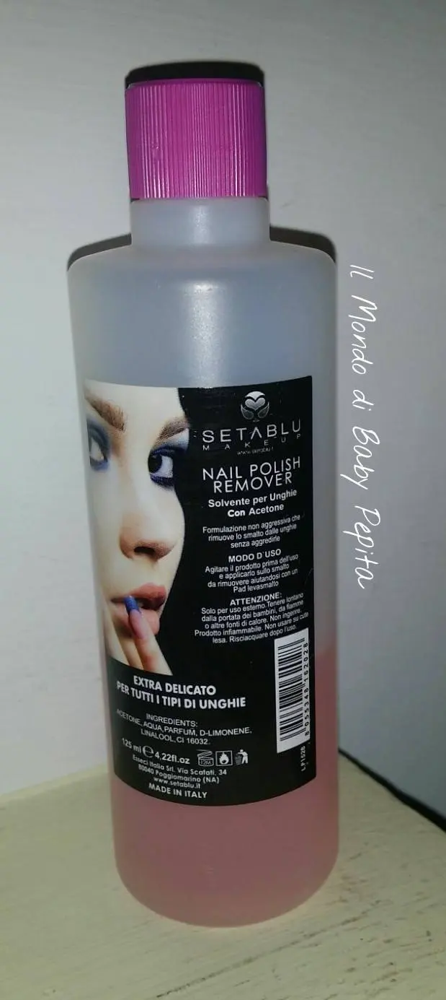

SETA BLU - SOLVENTE
Heilà bimbeOggi purtroppo sono qui per aprire un'altra categoria del mio blog, e cioè i BOCCIATI. .Eh sì, non sono solita bocciare prodotti ma questa volta non ho potuto venir meno. Sto parlando di un solvente per unghie. .
La marca in questione è SETA BLU

Purtroppo ho provato in più modi questo acetone ma niente, non sono riuscita in nessun modo a trovare un lato positivo . .
Sulla bottiglina dice:Formulazione non aggressiva che rimuove lo smalto delle unghie senza aggredirle.
Ora dico, ho capito che non bisogna aggredirle le unghie ma cavolo non fa il suo dovere come si deve.

Dunque la mia opinione è NO

Mi dispiace ma non credo ricomprerò di nuovo questo acetone..Infatti se notate dalla foto c'è ancora del prodotto dentro e sta lì da un pò perchè ogni volta che devo usarlo preferisco usare un altro.